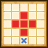

| Lv: | 150 |
|---|---|
| HP: | |
| MP: | |
| ATK: | |
| DEF: | |
| AGL: | |
| WIS: | |
| Move: | |
| Weight: |
| Weaknesses: | |
|
/ | |
|
|---|---|---|---|---|---|
| Resistances: | |
|
/ | |
|
| Immunities: | |
| Family: |  |
Role: |  |
Element: |  |
|---|
Note: All perks/abilities denoted with an * are using unofficial translations
| Abilities | ||||||
|---|---|---|---|---|---|---|
| Level | Type | Name | MP | Element | Range | Description |
| 1 |  |
Sizzling Numb Pellet* 閃熱しびれ弾 |
42 |  |
 3 |
Deals moderate Sizz-type martial damage (80 base potency) to 1 enemy, occasionally paralyses |
| 31 |  |
Famed Tank's Whistle* 勇車の笛 |
30 |  |
Self |
Reduces damage taken by 50% and grants the user x1.5 martial potency/recovery for 1 turn (Times usable: 3) |
| 52 |  |
Mini-Flashcannon* プチ・グローキャノン |
102 | |
 Front |
Deals major Sizz-type martial damage (273 base potency) to all enemies in area of effect, occasionally raises damage taken for 3 turns |
| Base Perks | ||
|---|---|---|
| Level | Name | Description |
| 1 | Max HP +30 | Raises max HP by 30 |
| 1 | DEF +20 | Raises max DEF by 20 |
| 1 | Little Rising Star* 小さくても勇車 |
Battle start, action start, or when revived: Reduces damage taken by 20% if the user's HP is 30% or over |
| 1 | Tiny Body* プチボディ |
Lowers Weight by 5 and raises max HP by 10 |
| 110, 120, 130, 140 | Mini-Flashcannon* potency +2% | Raises Mini-Flashcannon* potency by 2% |
| 150 | Ability Potency/Recovery +2% | Raises ability potency/recovery by 2% |
| Awakening Perks | ||
|---|---|---|
| Awakening | Name | Description |
| 1 | Famed Resolve* 勇車の決意 |
Battle start: Raises Move for 3 turns Battle start: If there are 4 or more Slime allies (incl. self) in the party: Raises Move for 3 turns |
| 2 | Zam Res +25 | Raises Zam resistance by 25 |
| 3 | Martial Tricks | Lowers martial ability MP cost by 10%, raises potency and recovery by 10% |
| 3, 5 | Mini-Flashcannon* potency +5% | Raises Mini-Flashcannon* potency by 5% |
| 4 | Woosh Res +25 | Raises Woosh resistance by 25 |
| 5 | Cover Fire Support* がんばり支援砲撃 |
When any other ally attacks: Attacks with Mini-Cannon* if enemy is within 2 to 4-space range, up to 5 times per battle (Mini-Cannon*: Deals moderate Sizz-type martial damage (75 base potency) to 1 enemy) When any other Slime ally attacks: Attacks with Focused Mini-Cannon* if enemy is within 2 to 4-space range, up to 5 times per battle (Focused Mini-Cannon*: Deals major surehit Sizz-type martial damage (148 base potency) to 1 enemy) |
| 1, 2, 3, 4, 5 | Stats Up | Raises HP, MP, ATK, DEF, WIS and AGL by 5% |